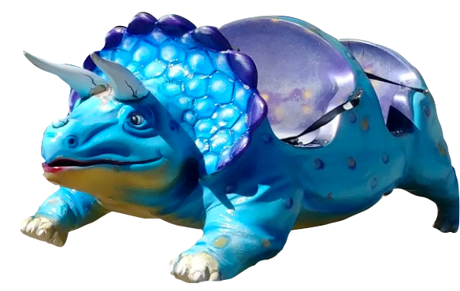
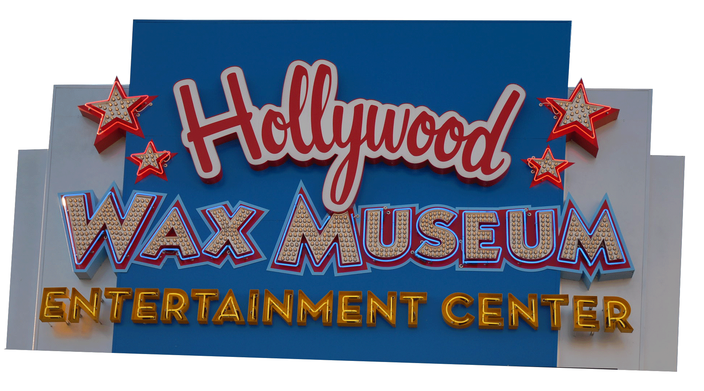
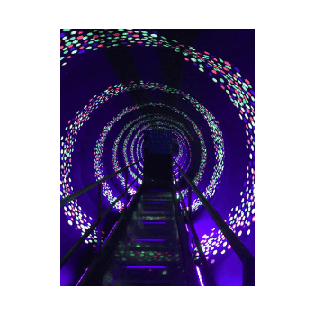

Blake Jones Racing Center

Roadside sign for the attraction.
"Remember the Milan-based group of designers and architects, who split the design world after their 1981 debut? There were those who loved the postmodernist wit of their kitsch, colorful furniture, and others that loathed it." - " Alice Rawsthorn, The New York Times (discussing kitsch in the context of furniture)

Dinosaur ride.

Sign for one of the rides.
Hollywood Wax Museum
Roadside sign for the museum.
Live Alligator Souvenir Shop

Alligator statue that hangs over the front entrance.
"The entrance to the store is the good part. It is colorful and clever but that's about the best thing that the store has to offer. " - Trip Advisor user

A large selection of uniquely-patterned towels.

A machine found inside the store.
"Preemptive kitsch, by contrast, delights in the tacky, the ready-made, and the cut-out, using forms, colors, and images that both legitimize ignorance and also laugh at it, effectively silencing the adult voice—as in Claes Oldenburg and Jeff Koons." - " Roger Scruton, Kitsch and the Modern Predicament
Wonderworks

A machine that scans your body temperature.
"Very fun and even educational. Lots of exhibits about space, music, animals, photography, aging, colors, bubbles, weather and the list goes on and on. I highly recommend!!" - Trip Advisor user

A tunnel you walk through that makes you feel like you are spinning.
"The main entryway is an optical illusion called the Inversion Tunnel, made ostensibly so that you can enter the exhibits which are said to be "upside down", like the building's "upside down" exterior. The tunnel itself is simply a stationary walkway through a large, steadily rotating tunnel painted with a spiral design in ultraviolet-activated colors. The spinning, Day-Glo spiral nearly guarantees vertigo while walking across." - Trip Advisor user